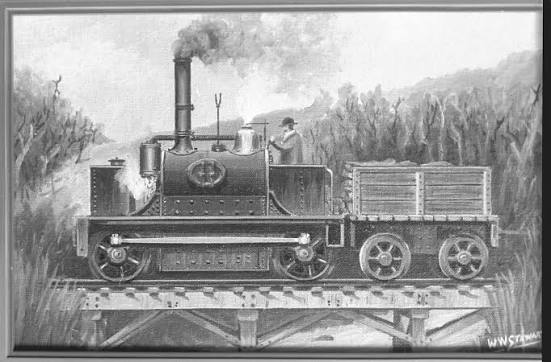

Steam Engines in New Zealand

Steam engines played an important role in the development of New Zealand during the 19th and early 20th centuries. They helped transport people, goods, and raw materials across the country.
Steam locomotives were widely used on New Zealand's railway network, connecting towns and making travel faster and more reliable. They also helped industries such as farming, forestry, and mining by moving products to ports and cities.

Steam-powered ships were also important for carrying passengers and cargo between coastal settlements. Before modern roads and vehicles, steam transport was one of the most effective ways to move around New Zealand.
Although steam engines have mostly been replaced by diesel and electric machines, many historic steam locomotives and traction engines have been preserved. They can still be seen around New Zealand.